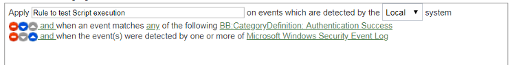
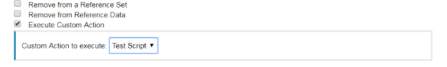
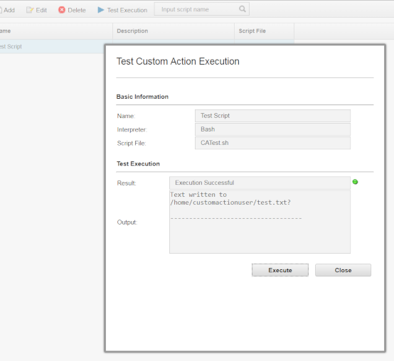

Exercise 1.3 - Configuring QRadar to Generate Events, Offenses and Run Ansible playbooks
Objectives
The objective of this part is to introduce you to the use of IBM QRadar and showcase event and offense generation, plus creation of customs rules that can be triggered to remediate issues, as part of an incident response strategy.
TODO: explain further...
References
The following are additional resources you may want to check out:
First, a disclaimer: this workshop is based on the following pages
Step 1 - Create a test script
The purpose of the provided sample script is to write a file named test.txt each time all rule tests are matched in a sample rule.
- Create a file with a .sh extension using the provided sample script:
#!/bin/bash datetime="$(date)" echo " Custom Action Script Test Time: $datetime" >> /home/customactionuser/test.txt echo "Text written to /home/customactionuser/test.txt?" - Log in to the QRadar user interface and click the Admin tab.
- Under Custom Action, click Define Custom Action.
- To upload your scripts, click Add.
- Type a descriptive name for the custom action.
- Scroll down to Script configuration and Select Interpreter: Bash.
- Click Browse and locate the .sh file.
- Scroll to the bottom of the Define Custom Action window > click Save.
- Click Deploy Changes.
Step 2 - Edit or create a rule to trigger your custom action
- Log in to the QRadar user interface.
- Click Offense tab > Rules.
- Locate or create a Custom Rule in the Rule Wizard that can be triggered easily.
Tip: An example rule to test a custom action might be to use an authentication event from your existing log sources or you could use a specific QID, such as the Offense Created QID (28250369) to test your custom action. - Edit the Rule to add the Host IP and a criteria such as successful login.
Example of a rule.
 - Click Next to configure Rule Responses
- Check the box next to 'Execute Custom Action'
- Click the newly created Custom Action Script in the 'Custom Action to execute' drop down box.

Step 3 - Confirm your custom action script triggers
Either by using "Test Execution" in the Define Actions window, or by confirming the Custom Rule has been triggered, verify the test file is created or updated:
To test your custom action in the user interface
- Click the Admin tab.
- Scroll to down to Custom Actions.
- Click Define Actions.
- Highlight the test script.
- Click Test Execution > Execute.

How to verify the test script in the command line
- Create an event to cause the custom rule to trigger.
- Use SSH to log in to the Console as the root user.
- To enter the shell to see the folder customactionuser use the chroot command:
chroot --userspec=customactionuser /opt/qradar/bin/ca_jail/ - Use the ls command to see if the file exists:
ls -lh /home/customactionuser/ - While in the chroot'ed shell, the file test.txt should be seen.
chroot --userspec=customactionuser /opt/qradar/bin/ca_jail/ $ ls /home/customactionuser/ test.txt?
The file test.txt should exist in the /home/customactionuser/ directory. The purpose of the sample script is to write test.txt each time the rule response is triggered by a rule.
TODO: create a script that actually calls Ansible and does some kind of remediation